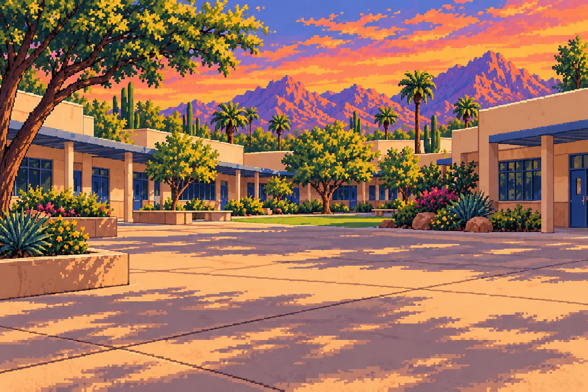
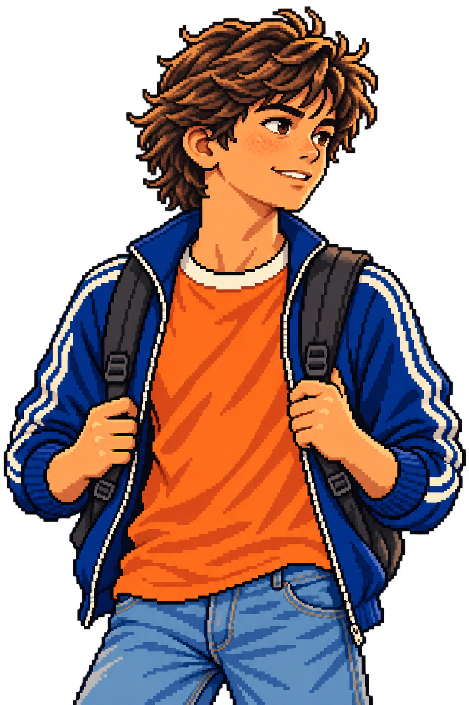
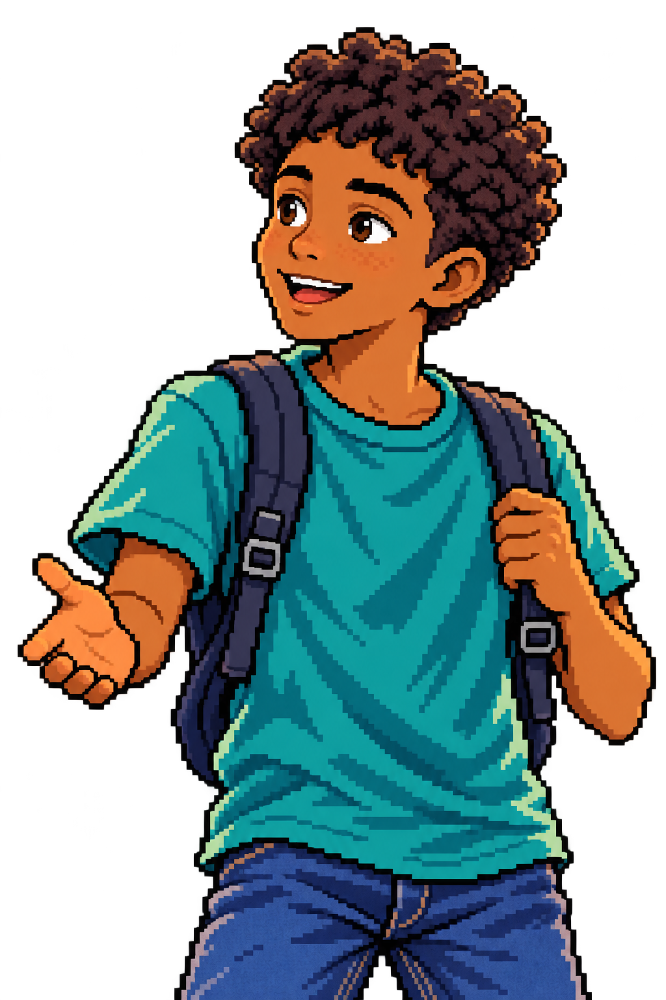
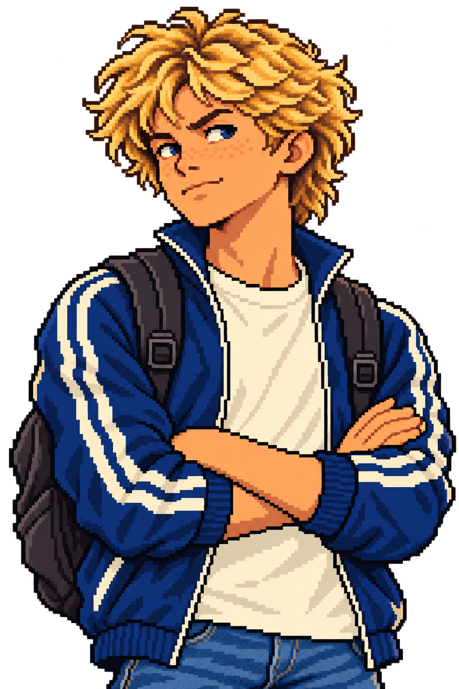

SCOTTSDALE / WEEK ONE / SCHOOL



Flat pixel-art 2D assets with entrances and speaker emphasis. This prototype has limited motion and no voiceover or facial animation. The dialogue follows the v0.7 school excerpt. Choices affect this disposable demo only. The crossbar activity is not implemented here; no launch or result is created. Restart clears this demo history.